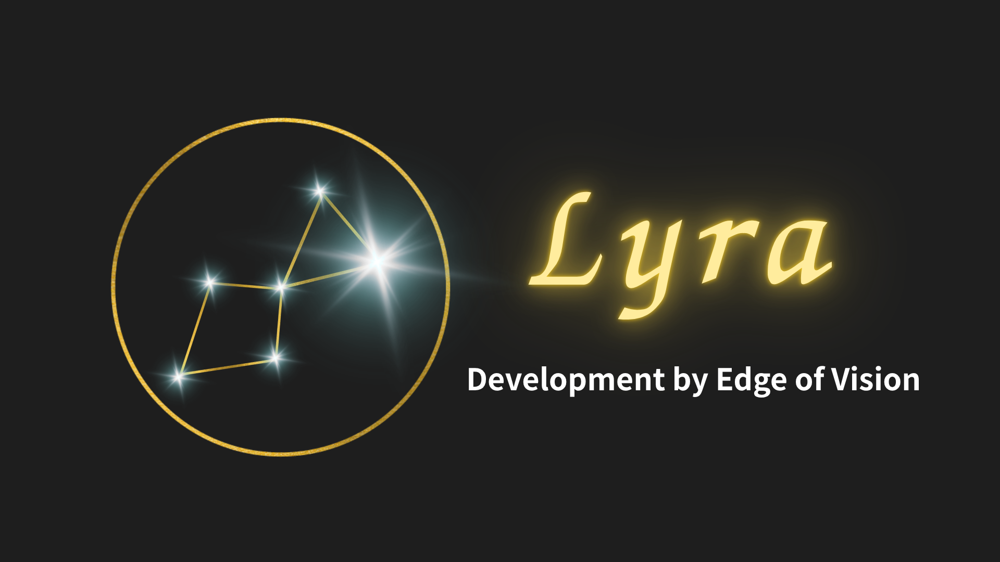

最初に入れるのは、絵の指示ではなく作品の中身。
タイトル、ジャンル、テーマ、キャラクター設定、ページごとの意図を整理して入れます。 作品の骨格を先に作るので、AI に丸投げするのではなく、制作工程を一歩ずつ前へ進める道具として使えます。
Manga Creation Tool
Lyra は、ストーリー・キャラクター・ページ構成を入力して、 AI と一緒に漫画ページを作る制作支援ツールです。 プロンプトを書くより、作品の中身を整理して漫画化することに集中できます。

Console preview
ここに制作コンソール全体のスクリーンショットが入ります
hero-console-ja.png
Overview
タイトル、ジャンル、テーマ、キャラクター設定、ページごとの意図を整理して入れます。 作品の骨格を先に作るので、AI に丸投げするのではなく、制作工程を一歩ずつ前へ進める道具として使えます。
ストーリー改善案、キャラクター参照、ページ構成、コマごとの演出、生成済みページまでがつながっています。 どの段階で直せばよいかが見えるので、試行錯誤が散らばりません。
Lyra は制作支援ツールです。良い結果にするには、キャラ設定やコマ内容を確認・修正しながら仕上げます。 その代わり、ネーム設計・絵柄の統一・画像生成の往復といった重い作業の負担を減らせます。
Quick Start
細かい説明の前に、全体の流れだけ先に掴んでください。やることは大きく 4 つ、ステップにすると次の通りです。
タイトル・ジャンル・世界観を登録。
作品を章・話に分けて整理。
必要なら StoryAI で流れを整える。
名前と見た目の要点を登録。
取り込みかプレビュー生成で確定。
話を指定ページ数へ自動で分散。
登場人物・構図・セリフを調整。
現在の設定から画像を作る。
気になる点を直し、必要なら再生成。
PDF または画像で書き出す。
下の「使い方」では、各ステップが実際の画面でどう進むかを順番に説明します。
How to use
各ステップは「画面で何をするか」と「画面で何が起こるか」をセットで説明します。
作品 / 章・話
ここにスクリーンショットが入ります
work-setup-ja.png
画面ですること：タイトル・ジャンル・世界観・テーマを登録し、章と話を作ります。
話は「序盤・中盤・クライマックス・終盤」に分けて書くことも、全体をまとめて書くこともできます。 作品ごとに章・話が一覧で並ぶので、どこを作業中かが分かります。
Story input / StoryAI
ここにスクリーンショットが入ります
story-ai-improve-ja.png
画面ですること：話の本文を入力し、必要なら StoryAI に「もっと不穏に」「会話中心に」などと指示します。
改善結果はすぐには上書きされません。反映ボタンを押した項目だけが入力欄へ入るので、気に入った部分だけ取り込めます。 気に入らなければ、その結果を踏まえて再指示できます。StoryAI などのテキスト改善はクレジットを消費しません。
注意 分割入力と全体入力を同時に使うと、どちらを基準にするか決められません。どちらか一方に絞ってください。
Character editor
ここにスクリーンショットが入ります
character-editor-ja.png
画面ですること：名前・別名・自由記述に加えて、顔・髪・服装などの特徴を入力します。
GUI 項目はキャラの見た目を安定させるための補助です。別名や通称を登録しておくと、ストーリー内で名前表記が揺れても拾いやすくなります。 名前と自由記述だけでも始められます。
注意 空欄をすべて埋める必要はありません。重要な見た目だけ入力してください。
Reference confirm
ここにスクリーンショットが入ります
character-reference-confirm-ja.png
画面ですること：画像取り込み、または全身プレビュー生成で参照画像を作り、使う画像をリファレンスとして確定します。
確定したリファレンスはページ生成時に参照され、キャラの見た目が安定しやすくなります。 画像取り込みは 1 クレジット、プレビュー生成も 1 クレジットです。ただし AI 生成の性質上、完全に同一になることは保証しません。
Page planning
ここにスクリーンショットが入ります
page-plan-generated-ja.png
画面ですること：ストーリーを指定したページ数へ分散します。
ページごとに目的と連続性メモが作られ、各コマに状況・登場人物・構図・カメラ・背景・セリフが自動入力されます。 これは漫画化の下書きです。テキストの骨格生成はクレジットを消費しません。
注意 生成前に登場人物・セリフ・構図を確認してください。上書き再生成すると、現在のページ構成が置き換わります。
Panel editor
ここにスクリーンショットが入ります
panel-editor-ja.png
画面ですること：コマごとに登場人物・構図・ショット・アングル・背景・セリフを調整します。
コマ割りテンプレートも変更できます。セリフは話者・種別・位置を指定でき、ナレーションは話者なし、セリフ・思考・叫び・ささやきは話者が必要です。 コマ数を減らすテンプレートを選ぶと、後ろのコマが削除されます。
注意 すべての空欄を埋める必要はありません。重要な情報ほど具体的に書くと、生成結果が安定します。
Generated page
ここに完成ページのサンプルが入ります
generated-page-sample-01.png
画面ですること：現在の入力内容から、ページ画像を新しく生成します。
生成も再生成も、前の画像を編集するのではなく、その時点の設定から作り直します。確定済みリファレンスがあると、キャラの一貫性が安定しやすくなります。 生成には数十秒から数分かかることがあり、進み具合はジョブ状態（queued / processing / completed）で確認できます。生成後はページをダブルクリックで拡大できます。
料金 ページ生成は 3 クレジットから。参照キャラが 4 体以上のときは、4 体目以降 1 体ごとに 1 クレジット追加です。失敗したジョブは failed になり、返却対象は返却処理されます。
Export
ここにスクリーンショットが入ります
export-dialog-ja.png
画面ですること：選択したページ、または全ページを PDF / 画像で保存します。
全ページの一括保存にも対応します。複数画像で保存するとページごとにファイルが分かれ、画像を複数枚保存するとき以外はファイル名を指定できます。 ここまでで、構想から書き出しまでが一続きでつながります。
Pricing
テキストを整える段階は無料です。画像生成やキャラクター参照の工程でクレジットを使います。
| 区分 | 内容 | 価格 |
|---|---|---|
| 無料お試し | 初回 12 クレジット | 0 円 |
| Standard | 50 クレジット / 月 | 1,000 円 / 月 |
| Premium | 175 クレジット / 月 | 3,500 円 / 月 |
| 単発 10cr | 10 クレジット | 220 円 |
| 単発 50cr | 50 クレジット | 1,100 円 |
| 単発 150cr | 150 クレジット | 3,300 円 |
| 操作 | 消費 |
|---|---|
| StoryAI / テキスト改善 | 0 cr |
| ページ骨格生成 | 0 cr |
| キャラ画像取り込み | 1 cr |
| キャラプレビュー生成 | 1 cr |
| ページ画像生成 | 3 cr から |
| 参照キャラ 4 体目以降 | 1 体ごとに +1 cr |
1 クレジットはサブスク基準で 20 円、単発購入は 1 クレジットあたり 22 円です。 料金・クレジット消費はリリース時点の設定で、変更する場合があります。
Billing & credits
ここにスクリーンショットが入ります
billing-credits-ja.png
料金表だけでなく、実際のクレジット画面で残高と購入導線を確認できます。 どの操作で何クレジット使うかが事前に分かるので、課金前に判断できます。
FAQ
はい。キャラクター設定やストーリーを入力して、AI と一緒に漫画ページを作れます。ただし、良い結果にするにはキャラ設定やコマ内容の確認・修正が必要です。
基本的には不要です。Lyra は GUI 入力・ストーリー・キャラリファレンスから内部プロンプトを組み立てます。必要なときだけ、自由記述で補足できます。
確定済みリファレンス画像を使って安定性を高めます。ただし AI 生成の性質上、完全に同一になることは保証しません。
画像生成は時間がかかる処理です。混雑状況やページ内容によって、数十秒から数分かかる場合があります。生成中に画面を閉じても、ジョブ状態から進み具合を確認できます。
生成ジョブが失敗した場合は、ジョブ履歴とクレジット履歴をもとに確認します。システム側で返却対象の失敗は、返却処理される設計です。
はい。選択ページまたは全ページを、PDF または画像形式で保存できます。
日本語版と英語版の UI を切り替えられます。StoryAI や自動入力も、選択中の言語に合わせます。
Rights & Safety
作品・キャラクター・生成画像は、ユーザーの制作資産として扱います。認証と所有者確認により、他のユーザーから見えないようにします。
決済は Stripe、ログインは認証基盤を利用する方針です。生成に失敗した場合は、ジョブ履歴とクレジット履歴から確認できる設計です。
利用規約・プライバシーポリシー・特定商取引法に基づく表記は、別ページに用意します。料金や権利の詳細は、そちらの正式表記が優先されます。
特定商取引法に基づく表記を見る →